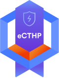
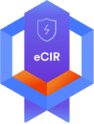
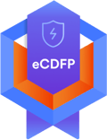
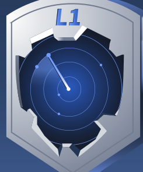

01 / INE SECURITY
eJPTv2
Junior Penetration Tester
Assessment methodology, host and network auditing, and practical penetration testing.
Curiosity is the first line of defense.
Exploring the space between how systems work and how they break. A personal journey through cybersecurity.
This is my corner of the internet for exploring cybersecurity. The focus: understanding systems, asking better questions, and turning learning into practice.
❯ cat identity.json
{
"name": "Salman Alshahri",
"focus": "Cybersecurity",
"mindset": [
"Stay curious",
"Think critically",
"Build with purpose"
]
}Type help to explore.
An interactive demonstration of a security analyst’s workflow. Explore the signals, then investigate what stands out.
My planned certification roadmap. Every credential below is a future goal — none has been earned yet.
Assessment methodology, host and network auditing, and practical penetration testing.
Core security concepts, threats, architecture, operations, and security program management.

Identifying, investigating, and responding to threats in enterprise environments.

Incident investigation, containment, response workflows, and recovery practices.

Practical digital forensics, evidence handling, and investigative workflows.

Security monitoring, alert triage, and the foundations of a security analyst’s workflow.
A shared curiosity. A new perspective. A chance to build something meaningful.
Email me↗